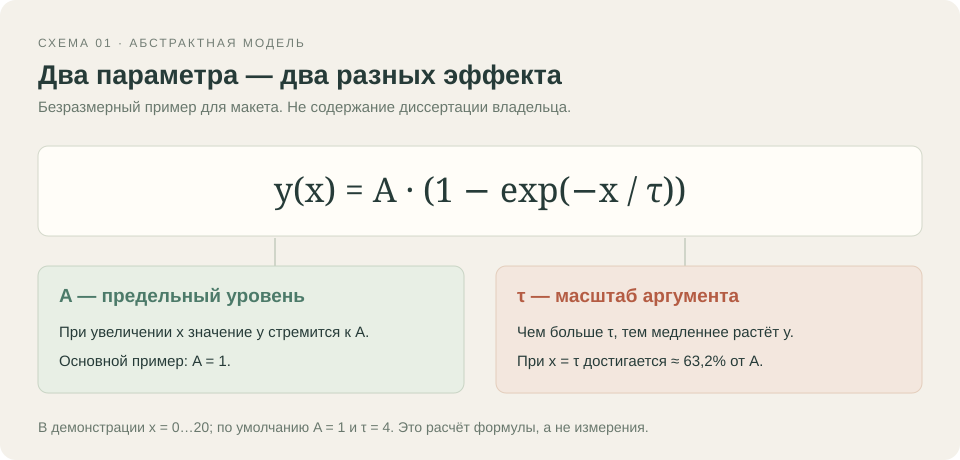
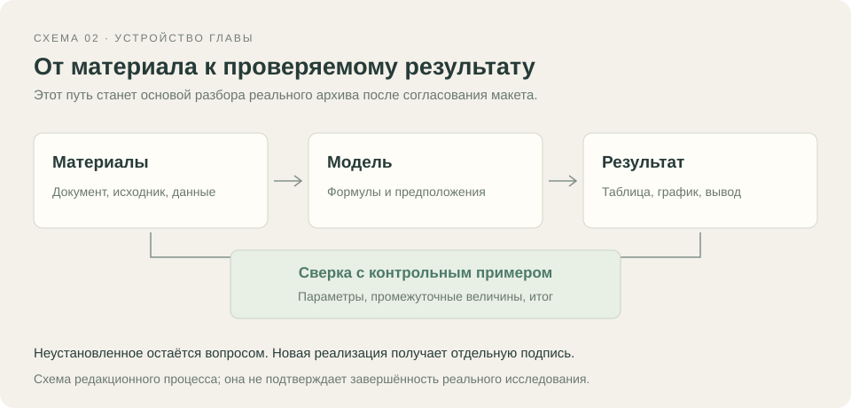

2014 · Учебная глава; дата условная
Исследовательская модель
Формула, предположения и чувствительность
Версия для чтения и печати. Все тексты, таблицы, иллюстрации и исходники доступны без JavaScript.
Как показать исследование
Исследовательскую работу можно читать на нескольких уровнях: сначала понять вопрос, затем проследить предположения и формулы, после этого изучить расчёт и проверить отдельный результат.
Для этого макета взята простая абстрактная функция насыщения. Она помогает проверить подачу формулы, графика, исходника и эксперимента. Содержание реальной диссертации ещё не добавлено и этой моделью не описывается.
Функция с двумя параметрами
Функция начинается с нуля и при увеличении x приближается к предельному уровню A. Параметр τ задаёт масштаб аргумента: при большем τ приближение к A происходит медленнее.
Все величины безразмерные. В основном примере A = 1, τ = 4, диапазон x — от 0 до 20. Значения на графике рассчитаны непосредственно по формуле; это не результаты физических измерений.
Изменить один параметр
Статический график сопоставляет τ = 2, 4 и 8 при одинаковом A = 1. При одном и том же положительном x большему τ соответствует меньшее значение y. Предельный уровень остаётся общим.
В эксперименте можно изменить τ и A. Изменение A масштабирует значение функции, изменение τ меняет скорость приближения к пределу. Такой вид сравнения удобен, когда нужно объяснить влияние предположений модели.
Проверка в известной точке
При x = 0 функция должна давать 0. При x = τ значение равно A · (1 − exp(−1)), то есть приблизительно 0,6321205588 · A. Эти свойства дают понятные контрольные точки.
Сопоставление результата с формулой и контрольным примером помогает обнаружить неверный знак экспоненты, ошибочные единицы или перепутанные параметры. Для реального исследования набор проверок будет основан на его математической модели.
Связь с материалами
У исследовательской главы должны быть доступны основания: исходный документ, формулы, данные расчёта и программа. По ним можно понять происхождение результата и повторить его.
После получения архива сохранится фактическая степень завершённости работы. Неизвестные сведения и незавершённые фрагменты останутся обозначенными, а современное объяснение и новая реализация получат отдельные подписи.
Иллюстрации


Данные графиков
Как параметр τ меняет кривую
Абстрактная учебная модель y=A(1−exp(−x/τ)), A=1. Значения вычислены по формуле, не получены из диссертации или измерений.
| Аргумент x, безразмерный | τ = 2 Отклик y, безразмерный | τ = 4 Отклик y, безразмерный | τ = 8 Отклик y, безразмерный |
|---|---|---|---|
| 0.0 | 0.0 | 0.0 | 0.0 |
| 0.5 | 0.221199216929 | 0.117503097415 | 0.060586937187 |
| 1.0 | 0.393469340287 | 0.221199216929 | 0.117503097415 |
| 1.5 | 0.527633447259 | 0.312710721209 | 0.17097088182 |
| 2.0 | 0.632120558829 | 0.393469340287 | 0.221199216929 |
| 2.5 | 0.71349520314 | 0.464738571481 | 0.268384371053 |
| 3.0 | 0.776869839852 | 0.527633447259 | 0.312710721209 |
| 3.5 | 0.82622605655 | 0.583137980321 | 0.354351473572 |
| 4.0 | 0.864664716763 | 0.632120558829 | 0.393469340287 |
| 4.5 | 0.894600775438 | 0.675347532642 | 0.430217175269 |
| 5.0 | 0.917915001376 | 0.71349520314 | 0.464738571481 |
| 5.5 | 0.936072138793 | 0.747160404195 | 0.497168422029 |
| 6.0 | 0.950212931632 | 0.776869839852 | 0.527633447259 |
| 6.5 | 0.961225792168 | 0.803088324796 | 0.556252689919 |
| 7.0 | 0.969802616578 | 0.82622605655 | 0.583137980321 |
| 7.5 | 0.976482254144 | 0.846645033155 | 0.608394373323 |
| 8.0 | 0.981684361111 | 0.864664716763 | 0.632120558829 |
| 8.5 | 0.985735766091 | 0.880567031733 | 0.654409247423 |
| 9.0 | 0.988891003462 | 0.894600775438 | 0.675347532642 |
| 9.5 | 0.991348304797 | 0.906985510789 | 0.695017231289 |
| 10.0 | 0.993262053001 | 0.917915001376 | 0.71349520314 |
| 10.5 | 0.994752481601 | 0.927560242966 | 0.730853651271 |
| 11.0 | 0.995913228562 | 0.936072138793 | 0.747160404195 |
| 11.5 | 0.996817219203 | 0.943583860496 | 0.762479180905 |
| 12.0 | 0.997521247823 | 0.950212931632 | 0.776869839852 |
| 12.5 | 0.998069545864 | 0.956063066377 | 0.790388612849 |
| 13.0 | 0.998496560807 | 0.961225792168 | 0.803088324796 |
| 13.5 | 0.998829120379 | 0.965781881688 | 0.815018600093 |
| 14.0 | 0.999088118034 | 0.969802616578 | 0.82622605655 |
| 14.5 | 0.999289825611 | 0.973350902664 | 0.836754487546 |
| 15.0 | 0.99944691563 | 0.976482254144 | 0.846645033155 |
| 15.5 | 0.999569257459 | 0.979245662126 | 0.855936340899 |
| 16.0 | 0.999664537372 | 0.981684361111 | 0.864664716763 |
| 16.5 | 0.999738741443 | 0.983836505412 | 0.872864267068 |
| 17.0 | 0.999796531631 | 0.985735766091 | 0.880567031733 |
| 17.5 | 0.999841538675 | 0.987411857758 | 0.88780310948 |
| 18.0 | 0.999876590196 | 0.988891003462 | 0.894600775438 |
| 18.5 | 0.999903888348 | 0.990196344964 | 0.900986591636 |
| 19.0 | 0.99992514817 | 0.991348304797 | 0.906985510789 |
| 19.5 | 0.999941705336 | 0.992364905781 | 0.912620973805 |
| 20.0 | 0.99995460007 | 0.993262053001 | 0.917915001376 |
Исходный код
Расчёт отклика · JavaScript
Новая демонстрационная функция. Просмотр и скачивание кода не исполняют текст из источника.
/* New teaching model for the Almanac mockup.
* This is not a reconstruction of the author's dissertation.
* All variables and results are dimensionless. */
function modelResponse(x, gain, tau) {
if (![x, gain, tau].every(Number.isFinite)) {
throw new TypeError('Model parameters must be finite numbers.');
}
if (x < 0 || gain <= 0 || tau <= 0) {
throw new RangeError('Expected x >= 0, gain > 0 and tau > 0.');
}
return gain * (1 - Math.exp(-x / tau));
}
function responseSeries(gain, tau) {
return Array.from({ length: 41 }, (_, index) => {
const x = index * 0.5;
return [x, modelResponse(x, gain, tau)];
});
}
// Example: responseSeries(1, 4).
// At x = tau, y = gain * (1 - exp(-1)) ≈ 0.6321205588 * gain.
Эксперимент
Абстрактная модель y=A(1−exp(−x/τ)), все величины безразмерные. По умолчанию A=1, τ=4; тема реальной диссертации этим примером не задаётся.
Открыть работающий пример (требуется JavaScript).
Материалы
- Формула и контрольные точки · TXT — Происхождение demo, области параметров и ограничения примера.
- Три серии расчёта · CSV — Значения формулы для τ=2,4,8 и A=1. Безразмерные величины.
- Учебная функция · JavaScript — Текст новой демонстрационной реализации.
Примечания
Год 2014 и все материалы главы демонстрационные. Это не реконструкция диссертации.
Все величины безразмерные, график показывает расчёт формулы, а не измерения.
В CSV: x от 0 до 20 с шагом 0,5; A=1; τ=2,4,8.
Выводы об исходной диссертации и её научных результатах возможны только после разбора её архива.